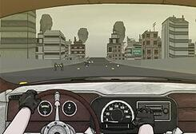
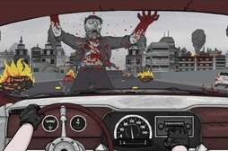
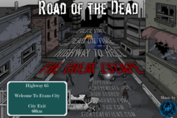
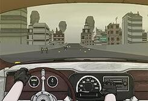
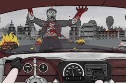
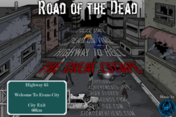

Aquí podrás:
Explorar nuestra colección de juegos flash, principalmente enfocada en juegos con temática zombie. Sumérgete en el mundo de los no muertos y lucha por tu supervivencia en estos emocionantes juegos. ¡Diviértete y revive la nostalgia de los juegos de la vieja escuela!
1. Road of the Dead
 





Road of the Dead es un emocionante juego de conducción en el que debes escapar de una ciudad invadida por zombies mientras evitas obstáculos y derrotas a los no muertos en tu camino.
Jugar ahora
2. Road of the Dead 2

Road of the Dead 2 es la emocionante secuela del juego original, en el que debes enfrentarte a más desafíos y zombies mientras intentas escapar de la ciudad.
Jugar ahora
3. Earn to Die

Earn to Die es un juego de conducción y supervivencia en el que debes mejorar y personalizar tu vehículo para atravesar hordas de zombies y llegar a un lugar seguro.
Jugar ahora